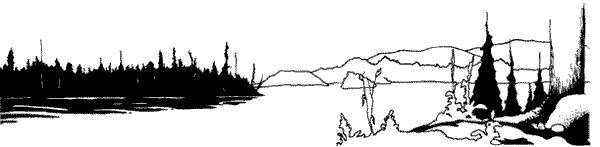

It's a little dated now, but the $1.00-a-week food plan is still good.
Copyright: Victor A. Croley
"If a man does not keep pace with his companions, perhaps it is because he hears a different drummer. Let him step to the music he hears, however measured or far away. "
-Henry David Thoreau
Two fearful explosions, coming as a complete surprise to a bewildered world, changed the course of the world and the lives of everyone in it - including your life - and heralded the beginning of the Atomic Age. Civilization as we know it was doomed when the echoes of those atomic bomb blasts in Japan died away. What next?
The world asked that question. It is still asking it. Of what use to build magnificent, costly cities, if they can be wiped out in a jiffy? Of what use to struggle and strive to build up a fortune, if in the flash of an eyelid everything - including life itself - can be wiped out?
We are now at that uncertain stage in life. We are confused. We are afraid. We are bewildered. We cringe. We don't know what to do next. We are afraid we may not only lose our possessions; we are afraid for our lives.
It has been said so often that it has become an axiom and even a proverb, that some good comes out of every bad. Another axiom is to the effect that every weapon carries with it its own defense. And if you will couple these two proverbial expressions, do a little thinking to get your ideas straight, you will have the answer to survival in an atomic age. Let a good life come to you from this bad omen for civilization, and use the only weapon against the atomic bomb which has ever been devised.
The good life? It is unquestionably the simple life - and more and more each day Americans are turning to it, in one form or another, grateful that there is an escape from the complexities and problems of modern city living.
And the defense against the atomic bomb? It is one simple but inexorable thing - space. For, don't you see, if you are not near enough where an atomic bomb may explode to be harmed by it, in your life it is harmless.
Therefore if you find a better life in the simple life, far enough away from the crowded cities to be uninteresting to the men who launch atomic attacks, you can survive. More: you can find a new measure of satisfaction in living by getting back to the simple form of living.
There's nothing new in this. A hundred years and more ago a lean, lanky, hawk-nosed New England philosopher and writer wrote an entire book about it. The book was called WALDEN. It was so unpopular in its day that the author - Henry David Thoreau - had to publish it at his own expense, and was left with most of the books on his hands. Once he wrote a friend: "I own a library of 712 books, 700 of which I wrote myself," - the unsold copies of WALDEN, a book about the simple life.
Nobody was interested in the simple life then. Everybody wanted the complicated life - build big cities, build big fortunes, surround yourself with possessions and servants, and outdo your neighbors. So Thoreau's voice was literally one crying in the wilderness.
But see what has happened in the last century. No writer is more respected than Thoreau, no book is read more devotedly by intelligent people who have discovered it than WALDEN. Maybe too late it has dawned on us that in this life which Thoreau championed, the simple life, the life of time and leisure and thought and good things which do not cost much money, there is the best life a human being can find.
And, as you read a short time ago, it is not only the good life now; it may be the only life a man can lead and preserve his life, because always over us like a pall of smoke is the threat of sudden, devastating, complete atomic attack.
But suppose such an attack doesn't come. We are still likely any day to wake up to the fact that our ancient and powerful enemy, Depression, is riding again. Remember the Depression which set in in 1929? Remember bread lines? Apple sellers on the street corners? Leaf rakers? Suicides among the once wealthy men? Pinched faces on the street? Worry and woe and the fear that you might never eat again?
The simple life will help obviate that. Better than money in the bank, bonds in the safety deposit vault, credit at the stores are the things with which you live surrounded when you live the simple life.
This, then, is your guide to getting back to the simple life; a practical everyday manual which will help you to put your feet astride the path that leads to the only life that, since the beginning of man's stay on earth, has led to his complete development and satisfaction--the simple life!
SECTION I
WHAT IS THE SIMPLE LIFE AND WHY YOU SHOULD LEAD IT
"Our life is frittered away by detail. . . Simplify, simplify. "
- Thoreau
The literal meaning of the word civilization is life in the city, and when we speak of the growth of civilization, we mean the growth of urban or city life. Unfortunately, city life is tempting, alluring, and so in ever-increasing numbers people turn to it.
But it isn't the most wholesome nor the most enduring form of life, and now, what with the threats you read about in the introduction, civilization is facing its gravest peril since the time when Ghengis Khan and Tamerlane just about wiped it out with their barbaric hordes.
When you read in the papers that the atomic bomb can destroy civilization it doesn't mean that everybody alive on earth will be wiped out. It means only those who are in the easy path of atomic bombs - that is to say, living in crowded cities - will be destroyed. If you destroy the cities, therefore, you destroy civilization. You have the choice of being destroyed, if the cities are attacked, or of saving your life. To save it, merely get far enough away so that the attack will not carry you in its wake. See how simple it is, how practical, how obvious to survive in an atomic world?
The simple life is merely the life which gives up the complexities and useless possessions of modern city life. It doesn't mean reverting to savagery, eating raw meat, not washing. It, indeed, means leading a fuller life than you lead now - as ever so many educated, intelligent people who have willingly gone back to the simple life will tell you.
There's that brilliant editor of Mears, Michigan, Swift Lathers, for your first exhibit. As long ago as 1912, Swift Lathers, law-trained, far-sighted, looked on city life, turned his back against it, moved to an isolated little village in the dune country on Lake Michigan, and started a newspaper which is still the smallest weekly newspaper in the world.
"Consider me at my age," he recently asked his youngest son, Nathan, in describing the kind of life he hopes the boy will lead. "What do I need? What do I want? Firewood, food, shelter from the wind, a shelf of books, chess and two good feet that will let me walk fifteen miles on a March afternoon in the solitudes of the dunes. Night comes and the smell of potatoes frying for supper. And the patter of little children coming to spaghetti.
"There, Nathan, you have the recipe for a happy life. We seek fire, food, shelter and riches of the mind. We have to live only one day at a time. But every day should have a little bit of heaven. And that might be five minute's time to sit down on a rock in a new mown meadow or a half hour of quiet reading solitude with Thoreau."
Another city man who decided on the simple life was Ted Richmond. After years of struggle in cities of the South, he bought a poor, worn-out 10-acre farm near Jasper, Arkansas, in one of the last frontiers in America. He was a city man, with soft hands, a liking for bright lights and movies, and his friends all thought him touched.
After he had been living the simple life for a year, his friend, Charles Morrow Wilson, visited him. He found Richmond completely remade in health, in outlook on life, in the measure of happiness he found. And he was living so economically that his cash outlay for his flourishing life was less than $100 a year, for everything. And yet he was living better, more fully than when he was earning much more in the city, and spending it all for "a living."
Another: George Livingston Baker. He had the further handicap of no money and 64 years of age when he set out to live the simple life in the Colorado Rockies above Denver. Less than $100 to his name he owned, and he was ill besides. But did he ever regret it? Not for a minute. At the age of 75 he is still going strong, cooking his own food, cutting his own wood, and making his adequate living in the ways that fill every day with satisfaction and adventure.
One thing you will get out of the simple life is greater satisfaction in living. In the city the majority of the people are bored. "Let's get together soon," they tell one another. "How about a movie tonight?" "What's there to do around this joint, anyway?" "What'll we do now?" "I hate Sundays - they bore me," - you hear these expressions on every side.
But no one who moves away from all that and gets back to the simple life is ever bored for a minute. C.W. Whitemore discovered that years ago. Whipped out by life in Philadelphia, "with axe, pick axe, and saw I came here (to the Pitts Hill Road in the Berkshires) and decided to build." He earned $1 a week as correspondent for a weekly paper, lived on that practically, and a year later wrote: "I am the wealthiest resident on Pitts Hill Road!" He never had a bored minute, always found an entrancing panorama of Nature, whatever the season, found treasure there he never found in the city.
And health, too. Bob Davis, the roving correspondent who looked in on everything interesting, discovered his healthiest man on Caledesi Key, Florida - Henry Sherrer.
"It is difficult to believe that this amazing man is in his seventy-eighth year; that his diet is bread, eggs, bananas, and an occasional cereal; that six hours of sleep is enough to refresh him," exclaimed Mr. Davis. "He reads without the aid of glasses and can hear a mile away the cooing of a turtle dove.
"The chest of him is like a cask, his arms are as iron and the muscles between his shoulder blades ripple when he strides. The clasp of his hand is viselike, and his voice rich with kindly intonations."
Maybe you have thought often - who among us hasn't? - of leading such a life. Maybe you wondered, living where you do in a large city or a small town that seems to offer no opportunity to break civilization's shackles, how, in the first place, you could do it, and where, in the second.
If that has been your problem, you can take heart from this fact - that there are smart men and women leading the simple life everywhere in the world; yes, right on the outskirts of the largest cities. You don't have to traipse off to Mexico or the Andes or Morocco, cut all ties with the phases of your life you like, in order to lead the simple life. All you have to do is make a minor change-in the way that will be discribed in the next Section.
SECTION II
WHERE YOU CAN LEAD THE SIMPLE LIFE
"If one advances confidently in the direction of his dreams, and endeavors to live the life which he has imagined, he will meet with a success unexpected..."
- Thoreau
Next to the question of deciding that you are going to lead the simple life, come what will, is that of deciding just where you will live it. The very phrase simple life connotes getting away from it all, up into the fastness of the mountains or on the far-flung desert, and you are wondering, with your slim resources and dependence upon being where you can sell your skill, whether you're quite ready to make drastic breaks such as this would entail.
You needn't worry about that part of it, because the fact is that the important thing is to want to lead this sort of life. Given that, places where you can live it abound.
Near large cities? Within twenty, thirty minutes of the largest cities you will find men and women living it. In any state?
Why not? One state is as good as another, although in the West, where there are vast areas of public domain in the form of national forests, it is easier to find land, and cheaper, because, as you will read in due time, you can lease from the Government sufficient land for simple living for as little as $5 a year - but that isn't the only kind of land on which you can live this simple life.
For instance, as long ago as ten years, there was a young Englishman working as a clerk in a London bank. If you think the city in which you live is crowded, try living and making your way in London once. And if you think the countryside around where you live is settled up, try finding a place without people near London; almost anywhere in Europe, for that matter.
But this young chap was determined he was going to get away from the city. He managed it easily enough; he merely rented enough room for his tent from a friendly farmer, paid him a few pennies a day rent is all. "It is a delightful country, beautiful and quiet."
From this beautiful and quiet countryside the clerk commutes to crowded, dirty London every day. When he's done with work, he hies back to his simple life-his quarters, winter and summer, consist of a tent 7x10 feet in size. It is furnished with a bunk along one side, a small trunk and a converted sugar box which he uses as a larder and kitchenette. Living thus simply, he has reduced expenses to a minimum-and raised satisfaction in living to a maximum. And all within 20 miles of the world's largest city.
Or New York City. It would be pretty hard to find a place close to that city where this sort of life could be lived, you would think, wouldn't you? But two girls, secretaries in downtown offices, have managed it. They, too, rent from a friendly farmer, live ecstatically and very economically in a small cabin, built with their own hands. George Baker, whose story you have partially learned in Section I, the 64-year-old man who found ease and peace and satisfaction in the simple life, chose a spot in the mountains forty miles west of Denver, Colorado. He didn't buy his 14 acres. He leased it from the Forest Service at $1 per month.
At the other end, to show you how you can fit this simple life into any scheme of living you fancy, there's a man named Clark Richardson who, tired of the city, tired of being broke, tired of working and having so little to show for it, decided that for him the real wilderness life was the thing.
He had managed to save only $500, no more, but that was enough to get him past the Canadian Government officials, who screen those who enter their country. With that $500 he was able to "retire" permanently. He built a cabin on rented ground in British Columbia, and earns enough working by the day for a few weeks a year to live in comfort and satisfaction for the rest of the time.
So don't hold back from making your leap into simple living because you happen now to live in a large city. Either move to the spot where you have always fancied you would like to live, or, if circumstances require you to be in the city for business each day, move out of the city far enough to find the sort of living you want. Don't say it can't be done. It can. Hundreds have done it. How do you know you can't until you have tried it yourself?
In this country for the past dozen years there has been a back-tothe-land movement that has elicited the cooperation of the Government in Washington. Shortly after World War II, for instance, the Goverment opened up tracts of five acres, under the Five-Acre Tract law, passed in 1938, in the desert of California. Hundreds of families and individuals have leased these tracts at $5 per year, $1 per acre per year. The requirements are not strict. The Act merely requires that you state the purpose for which the land is to be used. It can only be used as a home, camp, cabin, health, convalescent, recreational or business site, and not for farming. You have also to prove that you have financial responsibility to maintain yourself and carry out the undertaking for which you propose to use the land.
Information about where to write for such land is included in Section VII. There also you will find information about other Government lands which are available for your use in living the simple life.
But don't worry too much if there isn't public land near where you are. There's land. That is all that counts, because if you are persistent and earnest about it you can find a place for your experiment, all right. The main thing is, are you in earnest?
If you are, you are ready to read Section III. It tells you just how you can live this simple life, what kind of house or other shelter you can live in, and how easy it is to provide yourself with the essentials of a roof over your head.
SECTION III
HOW YOU CAN LIVE
"Most of the luxuries, and many of the so-called comforts, of life are . . . positive hindrances. "
-Thoreau
Your first requirement, of course, in leading the simple life, in going back to it, is to have something to live the simple life in. In other words, shelter. You have been used, maybe for your entire life, to apartments, hotel rooms, city dwellings, so you know what rent means. Budget experts figure on 25 per cent of the income for this one item of shelter alone. So if you have been earning $400 a month, you have been accustomed to laying $100 a month at least on the line for rent. Chances are, what with rents inflated like everything else, you have been paying out more than a fourth of your income for the mere sake of a roof between you and the stars.
You are concerned about going back to the simple life for fear you can't afford what it costs, if you cut yourself loose from your income.
Is that one of your misgivings?
Forget your past conceptions of what it costs for shelter, because the simple life implies that you can get along with a different kind of shelter; one which is just as good but which costs you just a fraction.
Part of the fun of the simple life is cutting yourself clear away from old ideas. Instead, for example, of living in a city apartment, at $125 per month, with its varnished floors, steam radiators, and janitor service, you get as far away from that as you can, and live in the simplest shelter imagimable.
Why, you might even live in a cave! It sounds preposterous at first, but many persons have done and do it. Pat Lynch, born into an aristocratic Irish family, ran away from home, sailed the seven seas, then settled down in an isolated valley in the Rocky Mountains, still named Pat's Hole in his honor. He couldn't be bothered about building a house, so he cleaned out and patched up a natural cave just above the river. Here he lived in blissful comfort for 50 years. During his latter dayshe died at the age of 98 just a few years ago, hale and hearty to the end-some of his neighbors "took pity on the poor old man", built him a tidy log cabin, and moved Pat and his effects into it. But he didn't like it. He went back to his hole in the cliff. Those who visited him there found it neat as a pin, clean, sunny, and bright; as good a home as any human being could want.
It shows one thing, what can be done. Chances are you will want a different kind of shelter, and no reason why you cannot have one for little or no cost.
For example, the market abounds with U.S. Army tents, sixteen feet square, made of the best canvas procurable. With sidewalls of lumber and lumber flooring, these pyramidal tents of the Army are as good a home for a simple liver as anyone could want, light, airy, wind-resistant, warm.
What about winter in a tent? All right, what about winter in a tent. No one can answer that better than a simple liver who tried it, and here is the experience of Mr. and Mrs. Charles H. Macomber. Thomas Drier tells about how they managed it: "If as some philosophers have said, we are rich according to the number of things we can get along without, Mr. and Mrs. Charles H. Macomber are multimillionaires. They lived in a tent all last winter near Plymouth, New Hampshire. One time the temperature got as low as 32 degrees below zero. Attempts were made to persuade the Macombers to move into a house, but they protested they were entirely comfortable and neither they, nor their cat "Mittens", nor their dog "Peaches" had any desire to desert their tent.
A trailer makes a fine home for a simple liver, and used trailers are going onto the market in increasing numbers now that the housing shortage is being relieved. Out in the west are ever so many persons who swear that a sheep wagon is the best place on earth for a human being to live, the most compact, the most comfortable, the most friendly. Frank Robbins of Glenrock, Wyoming, for instance, has spent maybe half his life in sheep wagons, on the bleakest, coldest, windiest spots in Wyoming. He never suffered, and although he owns a comfortable ranch house near town, he prefers living in his sheep wagon. Life there, he says, is simpler. It is reduced to its elements. It is beautiful.
But if you want a permanent home-if you have the AngloSaxon feeling that only when a man lives underneath his own roof does he live-why that opens up a whole new field of delight for you.
Build your own home. Let it be, according to the locale in which you build it, a log cabin, an adobe house, a rammed earth dwelling, even one made of bamboo or palm fronds. But if you build it yourself, you will enjoy it the more. And how do you know you can't build a perfectly satisfactory home for yourself?
There are dozens of cheap manuals on log cabin, rammed earth, adobe, or other construction on the market, and the best advice you can receive is to buy yourself one of these books, live with it until you know it practically by heart, and then-go to it.
While you are building your home, you can live in a cave or in a simple tent. George Baker, for instance, who has been introduced to you before and whom you will meet again in the next chapters, because he is such a paragon of all the pioneer virtues which make simple living practicable, did that. He had an 8x 10 wall tent. This he pitched on his rented homesite. In it he lived all one summer while he fashioned a oneroom log cabin with his hands. He said that no period of his life gave him greater enjoyment than the weeks he was arising early, working late on the first home of his own he ever built.
You don't need much equipment to do the rough and ready building you are going to do. And you might, like Thoreau, even borrow what you need, but if you do, do be as careful as he was when he returned his borrowed tools to have them sharper and in better shape than before!
Mr. Baker, when he built his house, had the most meager kind of outfit. He had: a shovel, a hoe, an ax, a belt hatchet, one crosscut saw, one panel saw, a brace and two bits, a sharpening stone, and two files: And that was all.
His personal outfit, while we are on it, because you will need a personal outfit yourself, you know, consisted of the following: 3 pairs of U.S. Army blankets, bought second hand; one Hudson's Bay blanket, a canvas tarpaulin, sheet iron stove, set of cooking utensils, water pail, water bag, and small wash tub.
In clothing he has a sheeplined coat, an army hat, several pair of heavy shoes, socks, an extra pair of trousers, two suits of underwear, an overcoat, one slicker.
Don't let not having S 100,000 in government bonds or two or three business blocks hold you back from leading the simple life. Your shelter is going to cost you next to nothing-after you get your cabin built $3 to $5 per month is going to take care of that. And your actual living, food to eat, other expenses which are inevitable to a human being as long as his breath holds out, are not going to cost you much more.
The few dollars it is going to cost you per month to live you are going to have little trouble in getting, as you will see when you read the next Sections.
SECTION IV
FOOD AT SMALL COST
"We can call always fire on less, when we have more to live for. "
- Stephen McKenney
Maybe you have yearned for years to lead this simple life, but have been afraid you weren't ready for it, because you did not have an assured income from investment of from $100 to $1,000 per month, depending upon the extravagance of your tastes or your experience in what constitutes a living in a modern city or town.
Revise your concept of what a living means and you can live like a king on very little, for much less, as a matter of fact, than $1 a day. And anyone can earn $1 a day regardless of where he is, regardless of how unskilled he is, because $1 a day can be picked up with just a few hours work a week.
You are used to grocery bills running $100 a month and up, but it doesn't cost more than 10 per cent of that to sustain life and health and keep you well nourished. The trick is to buy simple foods, which are always inexpensive, instead of fancy foods which are always dear.
Not only will these simple foods cost you less money, but they will nourish you better and actually keep you at a higher level of health.
A man named Frank Tarbeaux was convicted of some petty crime in England a number of years ago, sent to prison for 27 months. He had been a successful gambler, a high liver, and what they fed him in prison at first dismayed him. He thought surely he would die of starvation, either that or boredom, because the meals were all the same.
For breakfast and supper he and his fellow prisoners received a bowl of oatmeal, a chunk of bread, a jug of water; at noon they received bread and a large bowl of soup. And he thought he was badly treated. But after a few months such health as he had never known came to him, and when he was discharged and wrote a fabulous story of his life, he declared: "I am grateful to that sanitarium."
Of course, it isn't necessary for anyone to go to jail to learn and practice the benefits of simple fare. Just let him live on a few cents a day, confine his purchases to items which can be kept within, say, 50 cents a day for everything under today's higher prices.
Seven or eight years ago a research foundation in Minneapolis interested in proper nutrition, made a study of the actual cost to maintain a human being in the peak of health and fitness. The foundation concluded: "The average normal American needs only a few pounds of food a day. He can buy it at an average cost of eight cents per pound. He can be amply nourished, if he will build his diet around a few simple plentiful foods.
"Millions of low income and moderate income American families are undernourished because of wasteful spending of their food money," the report continues, "which in turn is the result partly of 'over-civilized' eating habits and partly of lack of education in food values. Much of their precious food money goes for items of little food value - 'taste-ticklers' and stimulants."
As to what is needed, these are the essential or protective foods: a pound of whole wheat foods and a pint of milk a day, which will supply most of the proteins, vitamins, and minerals needed for healthful, vigorous living. This basic diet can be fortified, according to this report, with an occasional orange or can of tomato juice and a bit of fatty meat two or three times a week.
When this report was issued, the cost per pound of essential foods was around eight cents. Say it has doubled since. That makes only 16 to 20 cents per pound.
Current prices on essential low-cost foods as this was being written, in a large city market, ran: Soy beans, 18 cents a pound; split peas, 11 cents; navy beans, 11 cents; pinto beans, 12 cents, spaghetti, 18 cents; rice, 16 cents. Apples were selling for 10 cents a pound, tomatoes at 14, flour at 8, potatoes at 3, lettuce at 10 and sweet potatoes at 10. Milk was 17 1/2 cents a quart.
Some frugal buyers can shade even this report. There is V. Berglin, of Tucson, Arizona, for example. For years he has not spent more than $75 to $90 per year for his food, only $6 to $10 per month - and he is one of the best-nourished and peppiest individuals in the Southwest.
One month's supply for a simple liver - this is an actual marketing list of a man who has followed this system for living for a long time - would run like this: 20 lbs. white flour, 10 lbs. corn meal; 6 lbs. bacon; 1 lb. salt pork; 1 lb. coffee; 1/4 lb. tea; 5 lbs. sugar; 10 lbs. potatoes; 3 lbs. macaroni; 2 lbs. raisins; 3 lbs. navy beans; 6 large packages each of corn flakes and oat meal; 12 cans of condensed milk. The cost will run you at today's prices around $12. And that, plus fresh meat which you will pick up or fish you will catch or small game you will snare or trap, will sustain you easily and well and give you a feeling of satisfaction and creature comfort.
One of the saddest stories from World War II told of a British aviator whose plane was shot down over the jungle. He parachuted to safety but soon became lost and before he could reach friendly hands; before searching parties could reach him; his strength was exhausted and he died of starvation. When found, the body was lying in a bed of purslane-a common weed found in various parts of the world. In Europe, poor families often use purslane as a salad, and nutritionists have found that this common weed has a food value about equal to green string beans. The unknowing flyer had actually starved to death in the midst of plenty.
Southern California today is one of the richest agricultural areas in the world. Rich soil and mild climate make for year around harvesting. But yet when the Spanish fathers first ventured into this territory they faced several years of precarious existence. Time after time they were on the verge of starvation and on the point of abandoning the enterprise. The small sailing boats took months to make the difficult journey from Mexico against adverse winds, tides and storms. Many of the crew died of scurvy each trip, and the meager supplies they, could bring were always inadequate to support the few dozen soldiers and priests in the early California missions. By luck, prayer and near-starvation they managed to hang on until gardens and crops could be planted and harvested and a livelihood assured.
But in the meantime, there were many tribes of simple Indians whom the Franciscan monks had come to Christianize. These peoples - and anthropologists estimate they numbered about 100,000 had few or no clothes, only the simplest kinds of snares and weapons, and their homes were rude shelters of boughs, on the lee side of rocks. They needed nothing more. They lived on seeds, small birds and animals, the fruits and pulp of certain cactus and other desert plants, and their principal food was a meal ground from the abundant acorns of the live oaks and made into a porridge or baked into cakess and bread.
The Spaniards, accustomed to a diet of cereals, meat, wine and olives, starved rather than try the food of the Indians. And many, many others - even today - are just such slaves of habit and custom, ready to starve to death before trying a new and strange food. Corn, called "maize" by many European peoples, is considered by them to be fit only for animal food. Relief agencies, trying to aid starving millions, have often been in despair by the rejection of such things as canned corn, hominy, cornmeal mush, corn-pone or "Johnny cake," which so many of us Americans regard as delicacies.
Habit and custom bind all of us with heavy chains, but when combined with ignorance they form a barrier which is well-nigh insurmountable.
Man is perhaps the most omniverous feeder of all animals. The stomachs of cows and grass eaters are especially adapted for their diet. Cats, dogs and similar creatures are particularly suited for a meat diet. But nature has apparently made the digestive apparatus of man so adaptable that it can handle the widest variety of foods. Fanatics have many times proved that man can live healthfully on a raw fruit and vegetable diet; on a diet that excludes all meats and animal products, and even on a completely liquid diet. A famous physician who has suffered so severely with amoebic dysentery that he was able to handle nothing but boiled milk, still lived comfortably and well for many years. A well-known engineer, faced with the problem of completing his senior year of college on a very small income, solved his problem by mixing large batches of dry oatmeal with a little sugar and a few raisins. He had no facilities for cooking, but ate several handfuls of this Spartan ration daily, washed down with plenty of water. He suffered no ill effects on this diet, maintained normal weight and health and graduated with honors. On the other hand, the life of the Eskimo proves that a diet of meat and fish can be equally successful. The famous explorer, Viljalmer Stefanson, once spent a year in the arctic during which time his diet consisted solely of meat, yet he returned to civilization in vigorous health and weighing ten pounds more than when he left.
Diet in man, therefore, seems to be very largely a matter of choice and education. Everyone who has watched a mother wean her baby must realize this. The infant is accustomed to a diet of milk and recognizes nothing else. When a spoonful of porridge is given him, he promptly spits it out. Only by the patience and persistence of the mother, during which time the food is spilled over bib and clothing, rubbed in the hair and played with, is he finally taught to eat it. Each new item of diet is more or less a repetition of the same routine. Where the mother is busy and impatient, or where the income and available food is limited, the diet of the child, and his food likes and dislikes carried over into adult life, may be very limited. Pellagra, beri-beri, scurvy and other nutritional diseases arise not from starvation but from a restricted diet. Even the meat-eating Stefanson found that to maintain health, he had to eat various kinds of meat and include fat, such as seal blubber, and the body organs - heart, liver, etc.
Modern nutritionists now agree that the preferred diet is one that is varied as much as possible. Variety in diet insures ample supply of vitamins, amino acids and other trace elements which seem to be essential to health. With such a varied diet there should be no need for supplemental vitamin pills or potions.
Perhaps more important from the standpoint of health than the actual diet itself, is the quantity of food taken. Although it has been estimated that at least half the world's population, chiefly in such densely populated countries as China and India, do not have enough to eat, it is equally true that a large part of the population, and especially in the United States, suffer from evereating. Gluttony is more common and more pernicious than drunkeness.
Overeating is a habit more difficult to conquer than many forms of drug addiction. A large majority of all the ills we suffer are due directly or indirectly to overeating Excess food acts in the human body just as excess gasoline in an automobile engine. Valves stick, carbon accumulates, sludge clogs up the working parts and eventually slows down, damages and stops the motor. In a similar manner, too much food impairs and breaks down the functioning of the human body; fat accumulates, circulation becomes sluggish and labored, the heart is distended, strained, and all the organs suffer in consequence.
It is interesting to note that the first man to warn of the harmfulness of overeating lived in Medieval Europe. Luigi Cor naro, a Venetian, came from a wealthy family and wasted his early years in such riotous living, drunkeness and gluttony that by the time he was 40 degenerative diseases had reached such a state that physicians despaired of saving his life. Given up to die he retired to a small country estate and took stock of himself. He was an intelligent man; well-educated for his time, and capable of profound reasoning. He came to the conclusion that the human body was designed to function most efficiently and well on the minimum amount of food that would maintain normal weight and strength. Overeating was not simply a waste of food but a definite strain and burden upon the body organs. He decided to experiment upon himself and found that - in his case - an intake of about fourteen ounces of solid food daily, with a pint of wine best satisfied his needs. His food was the plainest and simplest kinds, a coarse whole grain bread, a little meat - usually fowl - and a green salad. Caloric values were unknown five hundred years ago and so Cornaro concerned himself only with quantity. He found that in his own case the balance between enough and too much was so delicate, due to damaged organs, that the addition of only two ounces more than he required would produce a severe digestive disturbance. This was perhaps fortunate for it strengthened an already formidable resolution and Cornaro was able to stick to his diet so faithfully that he regained his health; became a noted architect; one of the leading citizens of the powerful Venetian republic; fathered a large family and lived comfortably to the ripe old age of 102.
Cornaro wrote of his experiences and advised others to follow his example, but he prescribed no diets, and suggested that each person should experiment with the needs of his own body to discover the kinds of food and the minimum amount of food which would maintain health, weight and vigor. He recognized that this would vary with the individual and the kind of exercise and work performed.
But, although Cornaro's advice has been widely read, and his writings translated into many languages and published many times over, it is rare that anyone can be found with the courage, resolution and will-power to adhere to them. One notable exception was John D. Rockefeller, Sr., who recovered his health and lived to the age of 96 through careful attention to a minimum diet. In his case, as in Cornaro's, it must be pointed out that severe digestive troubles practically forced the limitation of diet. With most of us, food and the pleasures of eating are so important that we can seldom summon the will-power to practice such Spartan restraint. It is, however, a goal to be cherished and remembered, for the nearer we can approximate this end, the greater will be our reward in improved health and a comfortable long life.
Although the annual seed catalogs list a large variety of vegetables, these are chiefly the familiar ones handed down from generation to generation of gardeners. Often they are not too well suited to our particular locality and often they have been selected and inbred for so many generations that they are now lacking in qualities which once made them desirable. Too few realize that varieties of weeds growing in the fields and along the roadsides may be just as edible; indeed may even be more nutritious, more appetizing, than our cultivated vegetables. Again, custom and habit and the resistance to change may blind us to the possibilities that lie around us. Just as the purslane in which the aviator lay down to die of starvation might easily have saved his life, so many of us waste our money on processed and factory packaged foods while much superior products may be trampled underfoot. Most country people know that tender dandelion leaves, lamb's quarters, and curly dock are superior to spinach as a cooked green, but there are countless other edible wild plants. Hunting edible foods in the hedgerows, fields and woods is as much fun as hunting game and perhaps even more profitalbe since these foods are sources of minerals, vitamins, and other health-promoting substances which so often are deficient in cultivated plants. If you are interested in the subject, there is a very helpful book which will serve as a guide. It is EDIBLE WILD PLANTS, by Oliver Perry Medsger, published by the MacMillan Company, New York City, in 1947. Perhaps your local library has a copy.
Meat is equally available to the knowing. Rabbits, squirrels and game birds are available in most parts of the country in season, but few realize that other small creatures often considered pests are just as valuable for food . . . the grass-eating marmot or wood-chuck, the opposum, raccoon, muskrat, yes even the skunk or porcupine. Some years back, in an effort to encourage hunting of the pestiferous crow, dieticians investigated the food possibilities of this maligned bird and found it could be prepared as tastily as chicken. And almost every small boy who has played Indian has discovered that the sparrow and noisy starling, plucked, cleaned and roasted on a spit over a campfire are as delectable as quail, dove or plover. To this list should be added fish, frogs, turtle and crayfish available in most streams and ponds.
In this Section, too, it should be pointed out that while the snares put out by various trappers supply houses are most efficient, there is at present a growing interest in the small boy's slingshot, made from a forked crotch, a pair of rubber bands and bit of leather for a pocket. Lopsided and misshapen stones which we used for ammunition in childhood prevented accuracy, but modern slingshot fans have found that lead shot, or small round pellets of clay, dried hard in the sun, can be fired with accuracy equal to the best bow and arrow and, indeed, comparable to a small rifle.
The art of cooking is something that can be as elaborate as the concoctions of a skilled French chef, or as simple as the tin can of "Mulligan" on the hobo's fire. Taste, time, inclination and equipment dictate how and what we may accomplish in this line. For economy of time, effort and money, many simple one-dish meals cooked en casserole are possible. Simplest of all, of course, is famed "mulligan stew" in which available meats from a soup bone to a chicken are put into a kettle, or even a large tin can, together with vegetable, salt and pepper and cooked together to the consistency of rich soup.
The Mystery Chef, famed radio commentator on cookery, once told of observing the unemployed during depression periods in London survive in well-nourished comfort on a similar dish. These poverty-stricken men, unable to find work, would gather up the discarded outer leaves and slightly blemished vegetables thrown out as unsalable by the green-grocers. With a few pennies cadged at panhandling or running small errands, they would purchase the cheapest cuts of meat such as shin bones, neck bones, etc. Cooking these together they would have the equivalent of a "mulligan" stew which was not only satisfying but also contained the elements for complete nutrition.
During the depression of 1907 a Boston newspaper reporter, Elmer Rice, made a carefully checked demonstration of how a working man could eat satisfactorily at a total cost of only one dollar a week. Food costs were, of course, considerably lower than in our day, but the chief factor in Mr. Rice's success was the stove, an unpatented device known as the "Atkinson stove." Since cooking costs were included in Mr. Rice's allotment and he was restricted to a low-cost-sleeping room of the type then used by so many unemployed it was important that his stove be efficient, simple and economical. The Atkinson stove was all of these. Heat was supplied by an ordinary, inexpensive kerosene lamp. The stove proper consisted of an insulated metal cover which rested on a grill a few inches above the lamp, so as not to interfere with the air supply. The slow gentle heat accumulating under the insulated cover cooks casserole dishes without shrinkage or burning and retains and blends food flavors in a way that can hardly be duplicated.
The Atkinson stove can be used as readily for frying, boiling or baking. Set on a table, the lamp could supply evening light at the same time cooking is done. Costs are surprisingly low, depending upon the cost of kerosene. Doubtless the stove could be adapted very easily to use with a charcoal pot, alcohol, gas or gasoline burner. The essential element is the insulated metal cover, and this can be contrived by removing the bottom, from a five-gallon motor oil can, setting it inside a corrugated cardboard carton with a two-inch airspace between the can and carton, and packing this airspace with lightweight glass wool for insulation.
SECTION V
HOW YOU CAN EARN A LIVING
"I have never been able to find one good reason for working at all, except for bare subsistence or for the fun of it. "
- Charles Allen SmartOf course, even a meager living requires money, and money comes only in exchange for work of some kind, so you have to give some thought to the problem of earning a living, if ever so simple.
And simple it is to earn a simple living, which is all you need.
This man, Baker, for instance, comes back into the picture once more. As you have been told, he had less than $100, was 64 years old, decrepit and discouraged when he set out on his simple living jaunt. He didn't know whether he would be able to make a go of it or not. Besides, he lived 40 miles away from the city in an isolated mountain region. His only training was that of an office man and surveyor, both of which aren't badly needed in the hinterlands where he settled. So he had many hours during his first month or two to worry about whether they'd one day find a lonely old man starved to death in his cabin.
He laughs now at the remembrance for he is confident that no matter where he would go he could earn all the living he needs. He has the know-how, you see. He got it during his first year of the simple life when he found 30 different things to do to earn money.
What kind of things? The same kind you yourself can turn your hand to. He had a garden, raised more than he needed, sold his surplus - he earned $40 a year at that. He acted as a guide for fishermen and hunters - got $5 a day for that. He drove parties of tourists over the mountains (mountain-scared tourists who wouldn't drive their own cars). He experimented with different herbs, found a cough syrup his neighbors were willing to buy. He made rustic furniture, found it had a ready sale.
Another man, John Burnham, living in upper New York State, went through the depression of 1929 - on without knowing there was a depression. His recipe is one you can copy and follows. "There never will be a time when everybody is broke," he believes. "nor will there ever be a time when every job that needs doing is done. There are fences to repair, wells to dig, letters to write, advice to give. Find out what somebody in your neighborhood wants. Then do it for him. Do it so well and at such low cost that you surprise him. Always give people more than they expect, and you'll always find plenty to do."
So you will. So you will. No matter where you are, you can turn some of your talents to money and the little money you need will not require many of your talents nor require them for a very long time.
What will be left in the way of talents, and energy and time will be yours to spend gloriously as you see fit, in living this most blessed life of them all - the simple life.
SECTION VI
HOW TO START LEADING THE SIMPLE LIFE
"There is not a dream which may not come true, if we have the energy which makes, or chooses, our own fate . . . It is only the dreams of those light sleepers who dream faintly, that do not come true. "
- A rthur Symons
If you have read this far in this course you are convinced, aren't you, that the simple life is an easy life to follow and also the most desirable life,, and you have made up your mind that it will be your life.
Don't wait too long to start in. Don't be like so many persons, dreamers who go on year in and year out saying that, Next year will be the year I will do it. But next year never comes, and in the end it becomes too late. Be, rather, like the Chinese gentleman who had a sign in his garden: "ENJOY YOURSELF. IT IS LATER THAN YOU THINK," and start as soon as you can.
There is a certain amount of mental orientation and conditioning necessary before you set out, to be sure, and no one but yourself can make that change - about which will be required.
You first of all have to decide whether the simple life is really what you are after and if you are willing to make the changes necessary. You have to do some giving up. You can't have the same kind of corner drugstore comforts you have in the city. You may have to build your own fires, wash your own clothes, read by a coal oil lamp, and eat off an oil cloth instead of damask linen, such as you are used to in the fine hotels.
Your social life is going to be different. You can't spend your time at cocktail parties or chamber of commerce banquets or watching night club acts; and if these things are more important to you than the peace and serenity and independence which come from the simple life, maybe you had better not consider making the change.
But if you go into this thing with your eyes open - always realizing in the back of your mind that in case of economic or atomic attack it may mean the difference between survival and destruction - you'll never find a better life anywhere than the life that is simple.
But start preparing for it at once. Begin by buying the outfit you need to get started - sleeping outfit, cooking outfit, building tools, gardening tools, and the like. There's a world of fun even in preparing for the simple life, and mail order house and seed catalogs will enthrall you for weeks or months before you actually are ready to start in.
Do not delay too long. There's a new life awaiting you out there, a fine life, a full life, and it's a shame, if you have gone this far toward living it, for you not to go the rest of the way - and fast!
SECTION VII
INFORMATION SOURCES YOU CAN DEPEND ON
"Beware of all enterprises that require new clothes. "
Thoreau
For detailed information about different phases of your new life, here are sources of information:
ABOUT LAND AVAILABLE: Write to the Department of the Interior, Land Management Bureau, in Washington, for circular concerning five-acre tract leases. This is free.
The Forest Service, also in Washington, will send you a circular about tracts in the national forests which you can rent.
Read the Sunday classified ads. Frequently you can pick up small parcels of land for just a few dollars an acre.
Talk to a dependable real estate man in the vicinity of the place you want your simple life to unfold, and ask about renting or buying land.
CABIN BUILDING: The U.S. Government Printing Office, Washington, will send you on request a catalog of Government publications, several of which pertain to building cabins and other subjects of interest to simple livers. Many of these publications are free; others cost a few cents each. All are valuable to you.
Ask your local library for books on cabin building and other phases of homesteading. There is a fairly large literature on the subject, and a few weeks of reading will make you expert in knowledge - only a few months actual work will make you expert in actual construction! But get the theory first.
The publishers of POPULAR SCIENCE MAGAZINE (New York) have several excellent manuals on home building and repairing. They cost $1 apiece. This magazine and POPULAR MECHANICS (Chicago) are filled each month with practical howto-do-it articles which it would pay you to read.
CAMPING KNOWLEDGE: If you've never done much outdoor lisving, you had better read a book or two in the subject. Although fairly old, no other book gives you more background knowledge than Horace Kephart's CAMPING AND WOODCRAFT (The MacMillan Co., New York). This is a two-volume work and is a monument to Horace Kephart, who, incidentally, did exactly the thing you are contemplating - left it all behind and went to live the simple life. He was 43 at the time, librarian of the Mercantile Library, and apparently in a rut for life. But he bucked his way out, took a few hundred dollars, and hiked to the Big Smoky country in North Carolina. Here, living alone in a deserted cabin, he found a wonderful life. He likewise found a satisfying career as writer, friend of the natives, champion of conservation, and father of the Big Smoky National Park.
The library will get you other books on camping, but start with Kephart's; he's one of your kind.
FISHING AND HUNTING: A large literature exists on this subject, too, and you will find hours of interesting reading in it. Any manual on fishing in the vicinity of where you are to live will be invaluable; the same about a book on hunting. One of the most thorough and workable books on fishing is called FRESH WATER FISHING, by Arthur H. Carhart, published by A.S. Barnes Co., New York. It costs $5 but is well worth the price because it tells everything.
If you plan to do some trapping write to FUR-FISH-GAME in Columbus, Ohio, for a list of the trapping manuals published by that firm. These are inexpensive, around $1 usually, but cover a world of practical experience.
SUPPLEMENT TO SECTION IV
FOOD ONLY $1.00 A WEEK
"Only one thing in life matters - independence. Lose that, lose everything. Get old like me, you'll find that out. Keep your independence!"
- John Galsworthy in "Old English. "
Soon after the first edition of the Course was distributed friends began to chide us and point out that, after all, it - was some years ago that Mr. Rice made his experiments in living on $1 a week for food. The world has come a long way since then (most of it for the worse, many insist) and food costs in particular have advanced greatly. They doubted that anyone could live on $1 a week for food today, or anywhere near that amount. "Be reasonable," they said. "Make it $10 a week and more folks will believe you!"
Frankly, we began to feel a little uneasy ourselves. We don't live on $1 a week for food; never have and don't expect to. We think it unnecessary for anyone in these times to impose such Spartan restraints. We only intended to point out that it could be done, and done satisfactorily, if necessity demanded.
As doubt increased, we decided that we'd better have a careful test made and appealed to a man who had practiced the simple life for several years to give us the benefit of a laboratory experiment. His report follows:
"Dear Friends: You know I'm in sympathy with your ideas, but I didn't expect to be made a guinea pig. At least, not in mid-July when my garden is burgeoning with the first ripe tomatoes, green beans, sweet corn, new potatoes, peas, et cetera, and you tell me I have to pass them all up because some of your Doubting Thomases may not have gardens. My advice to them is to locate where they can have a garden. What is life without a garden?
"But since you were so urgent, here is my report, and I'm willing to seal it with blood, notarize it, and swear on a stack of Bibles if you insist.
PURCHASED SUPPLIES
3 pounds whole hard wheat from feed store. . . . . . . . . . . . . . . . . . . . . . . . .12
1 pound soybeans from feed store. . . . . . . . . . . . . . . . . . . . . . . . . . . . . . . .05
2 pounds powdered skim milk from bakery. . . . . . . . . . . . . . . . . . . . . . . . .20
1 pint blackstrap molasses from bakery . . . . . . . . . . . . . . . . . . . . . . . . . . . .10
1 package iodized salt from grocery . . . . . . . . . . . . . . . . . . . . . . . . . . . . . .05
1 yeast cake from grocery . . . . . . . . . . . . . . . . . . . . . . . . . . . . . . . . . . . . .05
1 pound salt pork from market . . . . . . . . . . . . . . . . . . . . . . . . . . . . .. . . .24
Total. . . . . . . . . . . . . . . . . . . . . . . . . . . . . . . . . . . . . . . . . . . . . . . . . . ..81
"There are several varieties of soybeans; and I like the big white ones the kind used to make bean sprouts.
"Blackstrap molasses is the refinery residue and contains all the concentrated minerals and vitamins removed in processing for white sugar. Bakers use it for flavoring and sweetening.
"Buying is important when there is need for economizing. At the time these purchases were made the market for select hard wheat was $2.22 per hundredweight; for soybenas, $2.43 . These are the prices the growers get for their top quality. The feed store is entitled to a fair mark-up for handling. But a local Health Food Store asked 350 a pound for whole wheat in a fancy package; 25 cents a pound for soybeans; 30 cents a pound for powdered skim milk; and 30 cents a pint for blackstrap. They have a very limited market and must charge accordingly, but you don't have to buy at these sources.
"Milk dryers were charging 5 cents a pound retail at their plants. I don't know what blackstrap was selling for at the refinery, but it is comparatively inexpensive; most of it goes into stock feed. The very dark molasses at the grocery is "blackstrap" - they just d on't admit it. They priced it at 18 cents for 12 ounces.
"Of course, no one likes to sell in these little quantities and you wouldn't want to buy in dribbles either. Wastes too much time and temper. Better economy would be to buy fifty or even a hundred pounds of wheat, if you can keep it in dry, clean storage; ten or twenty-five pounds of soybeans; a fivegallon tin of blackstrap, and ten pounds of powdered milk, providing you can keep it in air-tight tins, or tight glass jars. It absorbs moisture from the air and turns rancid if exposed needlessly.
MONDAY
"Breakfast: I ground half a cup of wheat through my old coffee mill, adjusting the burrs to a coarse, percolator type grind. This I cooked with water and a pinch of salt, and ate it sweetened with molasses and drenched with milk. I mix the powdered milk with water, shake well, and let it stand overnight in my spring cooler.
"After breakfast I took a couple of pounds of the wheat and put it through my coffee mill, adjusting the burrs to the finest, drip type grind. It put it through three or four times until it came out like flour, but coarse, of course.
"Where did I get the coffee grinder? I bought it at the hardware store for 50 cents. Said he'd had it on the shelf since 1922 . You don't expect me to charge that in my week do you? That is a capital investment.
"I measured out one and three-fourths pounds of this flour and stirred into it one level teaspoon of salt. Then I crumbled the cake of yeast into a cup of warm milk, stirred it up good and added another cup of warm water. This, mixed with the flour, made a dough of good consistency. I then set it aside to rise for twenty minutes.
"After scrubbing my hands, I rubbed them with a bit of the salt pork, which I also used to grease two tins. Then kneaded my dough good, dividing it into the two tins. There was lots of life in the yeast, so I set the dough aside to rise again and in about half an hour it was swelling over the top of the tins. Meanwhile, I had the stove going to get a good hot oven. It took about an hour to bake the bread well done, with a nice hard crust, which I like.
"I soaked a cup of soy beans in water while I made bread and when it was done, I put the beans into a crockery pot with a tablespoon of molasses and a couple of strips of salt pork and cut the stove down so it would simmer cook the beans for the evening meal. I put in plenty of water so they didn't need watching.
"For noon lunch, I had three thick slices of my fresh bread and a slice of salt pork. I fried out most of the grease and dripped it onto my bread. With a glass of milk, this was very satisfying, but I took a walk down to the back pasture afterward and ate a few handsful of wild raspberries, which are beginning to ripen now.
"Since you won't let me use my garden sass, I also gathered up some still tender leaves of lamb's quarters, some tender wood violet leaves, some watercress, and a small bunch of sour sorrel. These would be chopped up, drenched with salt pork drippings and made into a very tasty salad.
"Half the beans, the salad, a cup of hot mint tea, and a slice of bread spread with molasses made the evening meal. I suppose I should have picked a saucer of raspberries and eaten them with milk and molasses, but I didn't think about it, so will have them later.
"The mint grows along the run-off from the spring and I use a lot of it, and dry the leaves for winter. I like the tea strong and straight, but sometimes I sweeten it with a little molasses and sometimes I put in a pinch of crushed sorrel leaves, which gives it a little tang like lemon.
TUESDAY
"Breakfast consisted of a couple of slices of bread, toasted lightly and smeared with a little salt pork drippings, plus a cup of coffee. To make coffee, I put a tablespoon of the blackstrap into a cup and pour boiling water over it. Then I stir it up good and lighten it with a little milk. Tastes about like postum, and now that I'm accustomed to it I prefer it to the tannic acid solution that used to give us heartburn and indigestion in the Navy.
"For lunch, I warmed up the beans and polished them off with a glass of milk and a slice of bread. You'd like my bread . . . it is 100 percent whole wheat and no fooling; heavy and dark, with a rich nutty flavor. It's the kind of 'swarzbrod' the poor peasants of Europe had to eat while the nobility ate cake. But you'll remember that the peasants lived long and heartily while the aristocrats lost their teeth and their heads at an early age.
"A family of rabbits has been making free with my cabbage since early spring and I decided this would be a good time to reduce their numbers. I set a snare.
"For supper, I took half a cup of soy grits, which I make by grinding them coarsely through my coffee mill, a pinch of salt and some salt pork drippings for added flavoring, and boiled the mixture in the simmer-cooker to make a thick, rich soup - very like old-fashioned split pea soup. A slice of bread, a cup of mint tea, and a dish of raspberries and milk filled me up.
"Afterward, I cooked up a batch of whole wheat cereal with bits of salt pork from which I had fried out most of the grease. When it was thick and done I poured the mixture into a pan to cool and set overnight, to make a variation of scrapple
WEDNESDAY
"I was up bright and early and sure enough, there was a cottontail about three-quarters grown in the snare. I killed it with a quick rap on the back of the neck and cut his head off with a heavy knife, saving all the blood I could in a tin can. This blood, mixed with ground cereal or soybeans makes fine catfish bait and I like to have a can of it buried in the cool mud by the spring where it keeps quite a long time.
"The head I carefully split in two with a long ear for a handle on each side. Then I buried both pieces in my compost heap for a use I will tell you about later.
"I skinned and cleaned the rabbit, cut it up and wrapped it in a damp cloth to store in my food box in the spring. I like to have all the animal heat well cooled before I cook it.
"For breakfast I had a bowl of whole wheat cereal with molasses and milk, and a cup of molasses coffee.
"For lunch, I cut some of the scrapple into half-inch slices and fried them brown and crisp with a slice of salt pork. A glass of milk and some wild salad greens went with it.
"For supper, I fried the two back legs of my rabbit, ate a bowl of wild salad greens, a slice of bread and finished off with a cup of mint tea and a dish of raspberries and milk.
THURSDAY
"Breakfast: two slices of toast, a slice of salt pork fried and drained, and a cup of molasses coffee.
"After breakfast, I put the remaining pieces of rabbit in a paper sack with half a cup of whole wheat flour, and a pinch of salt and shook them around until they were coated well. Then I browned them good in a frying pan and put them in my crockery casserole with half a cup of soaked soybeans, a handful of tender lamb's quarters leaves, and three small wild onions. These wild onions are small but potent and have to be used with caution. I sometimes chop the green tops in my salads - when I don't expect visitors! I sprinkled the casserole with a little more salt and dripped a tablespoon or two of salt pork grease over all. Then I boiled a cup of milk with two tablespoons of whole wheat flour until it thickened, and poured this in the pot. I put the casserole on to cook soon after breakfast but by lunch it still wasn't done, so I continued to simmer cook it all afternoon.
"For lunch, I fried what was left of my scrapple and ate it with a glass of milk which I warmed, flavored with a spoonful of blackstrap, and drank.
"By supper time, the rabbit casserole was done just right and I ate half of it, with a slice of bread, before my belt began to feel tight. A cup of mint tea and a dish of berries and milk for dessert.
FRIDAY
"Breakfast: whole wheat cereal and molasses coffee.
"Lunch: two slices of bread made into a sandwich with a filling of chopped watercress, and a glass of milk.
"After lunch I dug the pieces of rabbit head out of the compost pile. They really weren't ripe enough, but I figured they'd do. I tied a length of stout string to each ear, got my minnow net and went down to a swampy, slow-water part of the creek. Here I tossed the rabbit heads in about three feet from the bank and left them for half an hour. When I came back and slowly pulled them up they were covered with crawdads (crayfish is the scientific name). I repeated the operation until I had selected about five dozen nice ones, each about three inches long.
"I washed them good, took them home and dropped them into boiling salt water. They turn a bright scarlet when cooked, look like miniature lobsters, and when the tails are separated from the inedible bodies and shelled, they taste very like fresh water shrimp. I ate half of them for supper with a salad of wild greens, a slice of bread, and a cup of tea. The rest of the crawdads I put in a covered bowl in my spring cooled food storage box.
SATURDAY
"Breakfast: two slices of toast and a cup of molasses coffee.
"Lunch: warmed up rabbit casserole and finished it. Slice of bread, glass of milk and dish of raspberries - plentiful right now.
"Supper: two slices of bread soaked in milk and fried brown on' each side in salt pork grease. Cup of mint tea.
SUNDAY
"Breakfast: wheat cereal with molasses and milk. Coffee.
"Dinner: I fried the rest of the crayfish with a bit of salt pork; fixed a salad of wild greens. Two slices of bread, a pot of tea, and raspberries.
"Supper: I eat a late noon dinner on Sundays - around two or two-thirty - and usually skip the evening meal. However, I was afraid you might cry 'foul' on me, so I ate some bread and milk in the evening and called it a week.
"P.S.: Never got around to spending the last 19 cents, so I think I'll splurge it on an ice cream soda next time I'm in town. Folks who use the kerosene burner would probably spend most of it on fuel. I use wood and charcoal which costs me only sweat.
"What would I do in a big city? Well, there are woods, fields, bunnies, and edible plants as well as fishing lakes and streams within trolley and walking distances of most cities. In the big cities, too, pigeons are a nuisance. But they are fat and easily snared, and they cook up nicely if given plenty of time on the simmer-cooker. I've lived in New York, Los Angeles, Omaha, Denver and lots of cities in between and I noticed most city park lily ponds are swarming with crawdads. They are pretty well distributed all over the country and, indeed, all over the world.
"You must keep in mind, also, that meat is not vital. George Bernard Shaw recently celebrated his 94th birthday. He has been a strict vegetarian for half a century and his good health and work capacity -he has just completed a new play - are testimony to his beliefs. Soybeans are the only vegetable which approach the protein content of meat and are therefore the best meat substitute. But soybeans can be prepared in hundreds of satisfying ways.
"Soup bones, chicken feet, and government inspected horse meat are also cheap additions to a low-cost diet available to most city dwellers.
"If you think my week's menu was a bit monotonous, just remember that in my garden now (July 26) I have ripe tomatoes, sweet corn turnips, carrots, kohlrabi, kale, cabbage, edible podded peas, lettuce, cucumbers, summer squash, new potatoes, onions and green beans.
"What about winter? Well, I'd eat more meat; might even get a deer. But there are also raccoons, possums, and red squirrels in addition to rabbits. For greens, I grow watercress in a Small aquarium and lettuce in a window boy inside a sunny window. I also sprout soybeans. That's in case you wouldn't let me use the stuff preserved from my garden - which would include dried and canned vegetables and fruits, as well as potatoes, rutabagas, squash, et cetera in the root cellar.
"And say, I have a loaf of bread and another day or two of food left on hand. Maybe two can live as cheaply as one!
Y ours faithfully"
Competent authorities now agree that diet is the most important single factor in the environment of all living things. More simply stated: "You are what you eat!"
Stockmen whose livelihood depends on their skill in raising superior beet; poultry-keepers whose success depends on the egg laying abilities of their hens, have long known this. It is incredible that, in the face of continuous experimentation and demonstration of the amazing improvements and benefits possible in animal husbandry, the science of human nutrition has lagged so far behind.
Organic gardening - growing food plants with natural composts and fertilizers as opposed to strong chemicals and poisons - has proved again and again that more vigor and greater resistance to disease and insect pests can be developed in the plants and that their food value and appetite appeal is greatly enhanced.
Scurvy, pellagra, beri-beri have long been recognized as diseases caused by diet deficiencies. But how much more of our ill health is due to faulty nutrition? A little flourine in the drinking water may prevent tooth decay. A little pantothenic acid in the diet may prevent gray hair. Now scientists are discovering that certain elements in the diet govern brain power and intelligence.
We are blind, indeed, if we cannot profit from this new knowledge to make our own lives healthier, happier and longer through a simple diet of easily available, natural foods, properly prepared.
"Only one thing in life matters independence. Lose that, lose everything. Get old like me, you'll find that out. Keep your independence! "
John Galsworthy in
"Old English"
|
 |
|
|